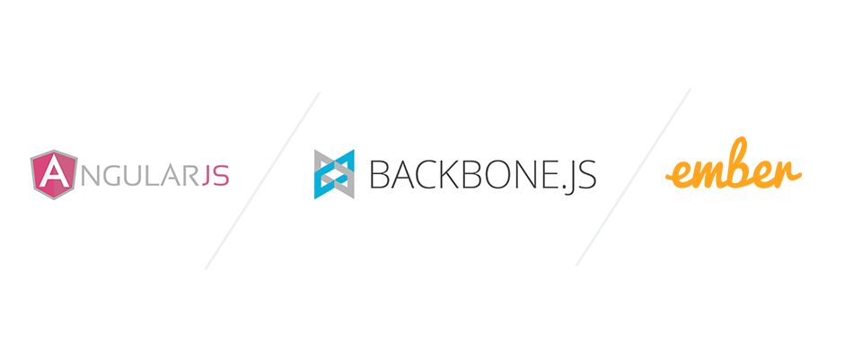

Bienvenue !
Pierre-Julien VILLOUD

Le serveur d'application
Le serveur d'application propose un contexte d'exécution permettant de développer des composants applicatifs avec des langages tels que Java ou C# nécessitant chacun en environnement spécifique (JVM ou plateforme .NET).

Ces serveurs permettent le développement d'applications complexes et multiples.
Application web dynamique MV* client
Un modèle émergeant depuis quelques années consiste à servir uniquement des ressources statiques (principalement du JS) à l'aide d'un serveur web classique. Le client s'occupe alors de générer les pages ainsi que l'arborescence du site. Lorsqu'il est nécessaire de récupérer des données dynamiquement, le client effectue des requêtes HTTP à un serveur d'application.


Ainsi, un seul gros appel est effectué au serveur web afin de récupérer les ressources statiques gérées par l'application. Les appels suivants au serveur d'application ne véhiculent que les données manipulées par l'application.